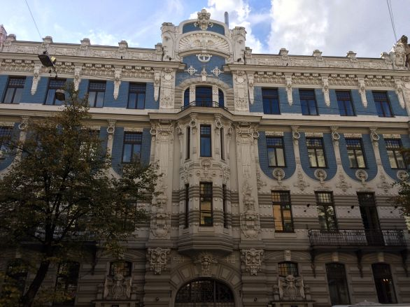
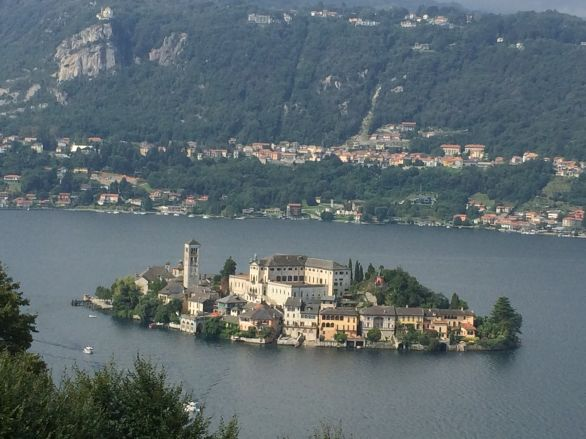
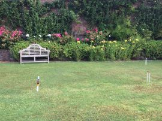
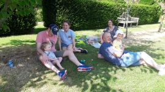

After a busy start to October, we thought life would be quiet for the rest of the month. However, we enjoyed a visit from Jon, Jess and the boys in the middle of the month.
We took Oscar and Felix to the park whilst parents relaxed at The Nook. Oscar amazed us with his exploits climbing the skate ramp and on the ‘zip wire’ but also with his sense of balance and confidence walking along a line of wooden posts.
.
We also decided to go to Montreuil-Sur-Mer for a few days. We visited Jenny, Mark and family for lunch on our way to Dover. Once in France we stayed in our usual hotel, went for the usual walks and enjoyed several meals out. We tried one new restaurant but were not overly impressed. However, L’Esplanade at Berck Plage, L’Auberge du Cronquelet at Saint-Aubin and Le Patio in Montreuil were all superb and matched our expectations based on previous visits. Despite all of the recent rain, we managed all of our walks without having to walk through mud. The photograph below almost captures the crisp, cold autumn morning.
It was Gerry’s birthday the day after we returned from France. We went out for lunch and returned to welcome the first of our weekend visitors. James, Hannah, Rosie, Ptolemy, Lucy, James, and Emma arrived that evening and stayed until Sunday. Jon, Jess, Oscar, Felix, Jenny and Elsie arrived Saturday morning and left after a lovely family day together. Annie had prepared a wonderful lunch that was thoroughly enjoyed.
To cap off the month, we went up to London for the day by coach from Cirencester. We had a lovely lunch in South Kensington at a restaurant called Ceru (providing ‘a taste of the Levant’) before visiting the Natural History and the Victoria and Albert Museums. Note to ourselves – don’t go to the Natural History Museum in School holidays. It was a lovely day out and one to be repeated.
Earlier in the year when Annie was looking at holidays we might enjoy she came across a week long trip to three capital cities Helsinki, Tallinn and Riga. We had both agreed it was a great opportunity to basically combine three city breaks into one holiday and indeed it was.
Our first city was Helsinki. We had a guided tour which took in some amazing and beautiful buildings ranging from the national museum, shown here, to the cathedral standing high in the old part of town. We also saw some very modern buildings and although very different architecturally, blended well.
.
.
We visited the Cathedral early in the morning and were blessed by a lack of tourists.
It made such a difference.
.
We also visited the monument to Sibelius and the Rock Church. The church had been hewn out of rock, was essentially circular and had a copper dome roof – it also had a nice set of organ pipes! That said, we both felt it more of a tourist attraction than a church.
We strolled around the promenade and saw both tall ships and a fleet of 10 icebreakers as well as the international ferries and cruise ships. The ice breakers were fascinating – Finnish companies have designed 80% and built 60% of all the icebreakers (circa 150) in operation throughout the world.
We took a short ferry ride from Helsinki to the island fortress of Suomenlinna. Apart from some cannon, it did not impress as a fortress. However, Suomenlinna did have an amazing and working dry dock that fills up with boats as the winter approaches.
After a brilliant three days in Helsinki we caught the ferry for the two hour crossing to Estonia and the city of Tallin. We had a guided tour of the old town and were impressed by the beautiful buildings and views.
The picture on the left shows the area of The Danish King’s Garden which also contained a couple of statues of faceless monks – they were very effective.
.
One of the most stunning buildings was the Orthodox Cathedral
We enjoyed an organised visit to the Kadriorg Palace located in parkland some 2 miles from Old Town Tallinn. Parts of the parkland were made quite beautiful by the trees’ autumn colours. The interior of the palace contained many beautiful paintings and frescos and was beautifully decorated. However, it was the exterior of the building and the manicured gardens and fountains that really impressed. A visit to the Kadriorg Palace is a must if you ever visit Tallinn.
We left Tallinn by coach heading for Riga via the Estonian university town of Tartu where we had a couple of hours to wander around. We walked through a lovely park beside the river and enjoyed a picnic lunch near two human statues. One was of a young girl running and the other of a life sized man sitting on a park bench.
We walked into the area near the very beautiful Town Hall and were amazed to find a fountain with bright green water.
The “Kissing Students” sculpture and fountain is one of the most recognised symbols of Tartu. A fountain has stood in the same place since 1948, when newlyweds and their guests would visit it for luck, and people would also take a dip in it. The sculpture itself was completed in 1998.
The final stop on our week long trip was Riga the capital of Latvia.
Once again we were treated to a walking tour of the Old town which was filled with beautifully clean and impressive buildings but was hard on the feet as the streets were quite large cobble stones.
We also learned to look up at the tops of buildings!
Two examples of some amazing figures we saw are shown below,
Two other interesting, if slightly less beautiful, sights on our trip to Riga were the Freedom Monument dating from 1935 and commemorating the Latvian War of Independence which lasted from 1918 to 1920 and the Latvian Academy of Sciences nicknamed Stalin’s birthday cake.
Riga was certainly a beautiful city but the Art Nouveau District was breath-taking. The pictures below show some of the quite amazing building facades.

What an amazing week. Helsinki, Tallinn and Riga are vibrant, clean and beautiful cities with so much to offer.
We set off for Bala and our usual hotel, The White Lion Royal Hotel after Church on the second Sunday in September (key because schools had gone back and there would be fewer crowds around). We arrived late in the afternoon after visiting Berrington Hall enroute where we had a short walk and looked around a curved walled garden quite a rarity and only just opened to the public but with many years restoration work ahead.
Once in Bala we enjoyed what has become a daily walk along the banks of the River Treweryn and the northern end of Lake Bala. We saw a couple of herons but they were too far away for our camera to capture. We also came across two very small calves. That evening we payed the first of four visits to Bala Spice a wonderful curry house.
The next day was wet and cloudy when we set off to catch a train from Morfa Mawddach to Pwllheli and back. The Weather biightened up as we travelled along the Cambrian Coast line and we enjoyed some wonderful views. On our return to the wayside halt at Morfa Mawddach we enjoyed a pleasant walk including going part way across the estuary where we encountered a train just like the one we had travelled on! We meandered back to Bala via Aberganolwyn where we came across a train on the narrow gauge Talyllyn Railway. We travelled on that railway last year.

The following day with much better weather we headed to Bodnant Gardens near Conwy.
We have been there several times but there is always something different to see. This time it was the hint of autumn’s arrival as trees were starting to turn. Unfortunately, the photograph doesn’t really show the hints of autumnal gold and browns emerging.
However, there were still glorious flower beds to enjoy.

After Bodnant we drove across the Menai Straits to visit Beaumaris Castle on the Isle of Anglesy. The castle was as peaceful as ever and a fine example of a moated castle that once enjoyed direct access to the sea for boats to deliver cargo right to the castle.
The following day we decided to visit more castles and headed first for Harlech. The weather was damp and windy and the sea looked quite wild as we paused beside the railway line and sea wall.
By the time we got to Harlech Castle the weather was much brighter and the sun shone! Harlech Castle was magnificent and only spoiled by the metal structure built to give access!
Criccieth Castle, our next stop was more ruins yet managed to give the impression of what was once a very grand place.
The views from both castles were good but the views looking south and north from Criccieth were beautiful.
After Criccieth we headed for Beddgelert for a walk along the banks of the River Glaslyn. It was a quiet walk despite Beddgelert being busy with tourists. From Beddgelert we headed to Dolbadarn Castle at Llanberis. The Sat Nav took us up over the mountains on some very narrow roads with few passing places and often drops on either side. It was a hairy drive – next time we’ll go the long way round! Dolbadarn Castle was quite disappointing after the previous castles of the day but was quite a feat of civil engineering given its location high up on a cliff overlooking Lake Padern.

We drove back to Bala down the beautiful Llanberis Pass and then enjoyed another walk beside Bala Lake before supper.
We returned to Fairford the following day via mid Wales. Annie noticed that we would pass the National Trust’s Weir Garden at Swainshill near Hereford just as we were looking for somewhere to stop. The garden was quite long and narrow along the banks of the River Wye. We had a thoroughly pleasant walk around the garden.
And so ended yet another wonderful break in North Wales.
Towards the middle of August we headed to Italy and a week long break at the Regina Palace Hotel in the town of Stresa on the banks of Lake Maggiore.
The setting was lovely and the hotel quite grand although the food was a bit like school dinners (package holiday in smart hotel?).
We visited two of the islands just off Stresa: The Island of the Fishermen (Isola dei Pescatori) was just a maze of restaurants and shops (not for us).
 However, the second island was Isola Bella with a beautiful Baroque palace and elaborate Italian gardens dating from the 17th century.We had a guided tour of the palace but it was the beauty of the gardens that made the visit. There were several white peacocks roaming free and all seemed completely indifferent to the many tourists. As we approached the island one could make out the ornate terraces but it was not until we walked around that we could really appreciate them.
However, the second island was Isola Bella with a beautiful Baroque palace and elaborate Italian gardens dating from the 17th century.We had a guided tour of the palace but it was the beauty of the gardens that made the visit. There were several white peacocks roaming free and all seemed completely indifferent to the many tourists. As we approached the island one could make out the ornate terraces but it was not until we walked around that we could really appreciate them.
We travelled by boat across the lake from Stresa to Cannobio where we enjoyed a pleasant walk around the old town. After a bus ride across the Swiss border to Locarno we enjoyed wine and aperitive overlooking a piazza before boarding the Centovalli Railway to travel back into Italy. The journey was 52Km long with 83 bridges and 31 tunnels. The countryside was quite amazing with lots of deep gorges, high mountains, rivers and waterfalls. Gerry even spotted deer grazing in the forest. The journey took 2 hours and was fascinating. Quite by luck we sat on the correct side of the train to get some amazing views. Unfortunately, the reflective nature of the windows meant no decent photos.
The next day we went by coach to Lake Como and the town of Como itself. The town was bustling and full of tourists. We visited the Cathedral and were quite taken with the blue and gold decorated ceiling but also enjoyed the peace and tranquillity of the place. Given all the tourists, we decided not to spend an hour queuing to take the funicular railway up to Brunati and instead walked along the lake side before finding a bar to enjoy the view, wine and nibbles!
The following day we were free to do our own thing so set off early to walk the mile or so to the cable car station. We took the Stresa to Mottarone cable car. We changed cable cars half way up at Alpino and then transferred to a chair lift to get to the top of Mount Mottarone (1,491m2 / 4,892 ft2).
.
On a clear day Mount Mottarone has a 360 degree panoramic views across the Po Valley to the Alps taking in some seven lakes (Lake Maggiore, Lake Orta, Lake Mergozzo, Lake Varese, Lake Comabbio, Lake Monate and Lake Biandronno). Unfortunately, there was some mist and cloud but we did enjoy the view and fresh mountain air.
.
There was a lovely view of Isola Bella from Alpino.
After our time at Mount Mattrone we decided to walk along the promenade into Stresa town itself and look at some of the back streets away from the lake front. On the way, we visited the lovely gardens of the Grand Hotel Des Iles Borromees. The beautiful ornate walls shown in the photo were a mosaic of different coloured pebbles. in each of the archways there were several fountains that danced to a carillon on the stroke of every hour. We just happened to be there on the hour.
The weather on the following day was fantastic with beautifully clear skies as we headed by coach over the Simplon Pass which rises to 2,005m and connects Domodossola in Italy to Brig in Switzerland. The mountain and glacier views were fantastic!
We continued our journey to the town of Tasch where we boarded a shuttle train to the vehicle free town of Zermatt (1608m elevation). Here we travelled on the rack railway (the highest open-air railway in Europe) to Gornergrat and an elevation of 3135m. The sky was clear and we had the most brilliant views of mountains, glaciers and The Matterhorn (4478m). They were breathtaking:
On our last full day we visited Orta San Giulio. We had travelled by bus to the village of Pella and then by ferry across the lake. Once in the very touristy, but quaint, town we climbed up to the wonderful site of Sacro Monte di Orta a Roman Catholic devotional complex on the summit of a hill known as San Nicolao.
We found the site rather disappointing as the chapels were in general quite dark, had limited access and far too many tourists!
After a pleasant lunch we travelled by ferry to the island of San Guilio and its Basilica with perfectly preserved 14th century frescos.
One of the finest views of the day was of the island from Sacro Monte. (shown below)

.
.
We had a lovely week in Italy and returned home to Fairford in time for some glorious weather!
At the end of July, Annie and Gerry achieved a long held ambition and enjoyed a holiday with all 6 children, their partners and the fourteen grandchildren. It was the first time we had all been together and therefore very special.
We had booked a country house for the week at Oakhampton Park. The house accommodated everyone easily and the magnificent gardens, swimming pool, croquet lawn, and many other facilities ensured there was plenty for everyone.
We had an amazing week and the sections below attempt to capture our week together.
.
THE HOUSE AND GARDENS
A view of the front of the house:
and a view of the back of the house from below the Croquet Lawn
The gardens were massive and fabulous. There was a large lawn in the front of the sweeping driveway where we played Smite. Right at the back, surrounded by beautiful borders and yew hedges, there was a very popular croquet lawn. We might not have known the finesse required but none of us showed much mercy to our opponents.


.
There were other lawns below the croquet lawn for relaxing and lots else to explore as Archie found.

.
INSIDE THE HOUSE
The best way to appreciate the splendour of Oakhampton Park is to look at the website www.oakhamptonpark.co.uk. Suffice to say it was lovely. The children enjoyed exploring, watching TV, watching an iPad cuddled up in bed, presenting a puppet show written and produced by themselves and much else!
Although the formal dining room could have seated all the adults, the only time it was full was for the puppet shows. Some of the children ate there but for the rest of us the large kitchen table and table and chairs on the patio outside the kitchen were where we congregated, ate and played cerebral games (provided by Jon)
.
SWIMMING POOL
The 50ft heated indoor swimming pool proved a tremendous success with the children whose water confidence increased incredibly during the week.
The adults may not have used the fully equipped gym or the sauna but most spent time in the pool.
 …..
…..
.
MEXICAN EVENING
One  evening we enjoyed a Mexican Theme. Hannah and James produced wonderful food, James made Mojitos, Gerry made Margaritas and Annie provided a donkey piñata filled with sweets. The picture shows Felix having a bash at the donkey! You may just be able to make out the plastic bags held by children in anticipation of the sweets they’d collect. Starting with the youngest and rising in age the donkey was eventually broken open. There were indeed lots of sweets!
evening we enjoyed a Mexican Theme. Hannah and James produced wonderful food, James made Mojitos, Gerry made Margaritas and Annie provided a donkey piñata filled with sweets. The picture shows Felix having a bash at the donkey! You may just be able to make out the plastic bags held by children in anticipation of the sweets they’d collect. Starting with the youngest and rising in age the donkey was eventually broken open. There were indeed lots of sweets!
.
BIRTHDAY PARTY
On the Wednesday we had a tea party to celebrate two birthdays; Felix was two and Callum eleven. Emma had reminded people that it was her birthday soon (15 August) so we enjoyed three birthday cakes!
Anticipation and then enjoyment.
.
OUT AND ABOUT
Apart from one day with some rain, the weather was very good and various family groups got out and about.
On the first day some went to the rocky shore and cliffs at Kilve.
On another day, Putsborough Sands was a real hit with some braving the sea (very cold) and Emma needing a warm up between her parents. They also enjoyed a pub lunch
…
.
From Left to right: Lucy, Elsie behind Emma, Sienna, Bethany, Oliver behind Ruby, Jo and Jenny. The other members of their families were elsewhere in the building!
Some also went to the stone Clapper Bridge at Tarr Steps and to the West Somerset Railway where ice creams were enjoyed.
.
There was one other adventure. On the Monday afternoon 7 of us set off for a four hour sea fishing trip from Watchet Marina. The team, Gerry, Jo, Alexander, Jenny, Callum, Martin and James (Hopkins) had a great time. James caught the first fish, Gerry the most fish and Alexander the largest fish. Jenny took the lovely picture of the rest of the team so I include a picture of her with a dogfish she landed. Sea conditions were good and we had a great time and everyone had at least one fish.

What a brilliant week!
The children arranged for a professional photographer to visit us with the aim of capturing the whole family as well as the individual family groups. Once her photographs are available, we will publish another Blog entry.
On the 23rd July, Annie and Gerry welcomed Jo and her family to England. They were heading for a few days in London before joining us and the rest of the family for a holiday.
The picture shows Alexander, Jo, Oliver and Chuck in the back row. Sienna is on the left of the front row with Chuck’s children Ruby and Sam beside her.
It had been a long time since Jo, and her children had been able to come to the UK so it was very special to welcome all our US family to England.
Early in June we took an overnight ferry from Portsmouth to Le Havre and drove the 600 km to Moulin La Geneste for a ten day stay. We have stayed several times before and were welcomed back by the owners Steve and Sharron who did everything possible to make our stay as enjoyable as ever and had even provided a bottle of wine already cooled in the fridge of our holiday home. The campsite remains a perfect retreat for older people and an absolute haven for children to explore and have fun.
The main purpose of the holiday was to enjoy our favourite walks in the beautiful and peaceful countryside. The walks are usually clearly signposted and offer views to cherish. Although we had to wear full wet weather gear on a couple of days, we were generally very lucky with our walking weather. We often found ourselves walking along tree lined lanes listening to a myriad of different birds (magical). The view below was from a road near Eyburie across to the Monédières mountains.
It is  quite amazing what people have outside their workshops! although we weren’t sure it was any different to when we walked passed the same building last year. Equally, some of the gates or fences were quite rustically beautiful. As usual, we encountered many limousin cattle that seem to stop and stare at us and also a very muddy field with pigs who also seemed to stand and stare!
quite amazing what people have outside their workshops! although we weren’t sure it was any different to when we walked passed the same building last year. Equally, some of the gates or fences were quite rustically beautiful. As usual, we encountered many limousin cattle that seem to stop and stare at us and also a very muddy field with pigs who also seemed to stand and stare!

We walked every day and all the walks were memorable for the countryside and associated tranquillity but the buildings in Segur Le Chateau were equally special and looked particularly grand this year.

All to soon it was time for us to head back home after another lovely stay. We broke our journey back to Le Havre with a picnic lunch in the Loire town of Loches. We sat in a beautiful park in gorgeous sunshine(!!!!) and then took a short walk around the quite beautiful town. Loches will certainly be on our itinerary in future.
A great holiday.
When Gerry was stationed at RAF Cranwell in 1973, he considered Lincolnshire to be flat and boring. His view meant that in the intervening years Lincolnshire had not been high on the list of places to visit. However, we have just spent a week based in a wonderful wooden lodge in Kenwick Park near Louth. Louth is on the edge of the Lincolnshire Wolds which quickly dispelled the opinion Gerry had held for the last 46 years!
We had a wonderful week walking about 7 miles a day and visiting various towns, churches and old buildings. This was the delightful 12th Century church at Raithby. However, it was walking on footpaths (brilliantly maintained) through fields, woods and crops that provided some of the best views.
.
One footpath in particular was a narrow track through chest high rape.
We also walked in nature reserves at Donna Nook and Gibraltar Head. Since neither of us were experts at bird spotting we can say we saw and heard quite a few different birds but we did recognise, egret, heron and buzzard along with the usual garden birds. We also saw hares, rabbits, stoat, deer and several sets of ducklings and goslings
One of our other walks took us through the village of Somersby, the birth place of Alfred, Lord Tennyson the 19th century poet and indeed poet Laureate. The walk, which was pleasantly quiet and quite scenic, started and ended at the delightfully named hamlet of Bag Enderby where Tennyson’s father had been the Rector.
On another day, after a long walk, we visited Mablethorpe. The beach was very long and unspoiled but, as we were quite tired, we took the sand train to travel a mile and a half along the beach (and return of course).
Whilst on the beach, we couldn’t resist a selfie (so unlike us).
.
There is a dearth of National Trust and English Heritage properties in Lincolnshire but we made a point of visiting Tatershall Castle (disappointing), and Gunby Hall (pleasant enough but we weren’t that impressed with the rooms and descriptions).
On the other hand, Gainsborough Old Hall was a really great place to visit. The Hall is among the biggest and best-preserved medieval manor houses in England dating back to the 15th century. We were very impressed by the original structures and rooms especially the massive kitchen.
We found the facades of the building quite different and, taken separately, hard to recognise as the same building.
.
.
The last full day of our holiday was a Sunday so we travelled to Lincoln to visit the Cathedral and attend a sung eucharist. Following the service we enjoyed a cup of coffee with some of the congregation in the Chapter House before exploring the Cathedral. We then walked the short distance (through a small street market) to Lincoln Castle. The weather was delightful and the crowds minimal because we were relatively early – a lovely way to end our stay in Lincolnshire.